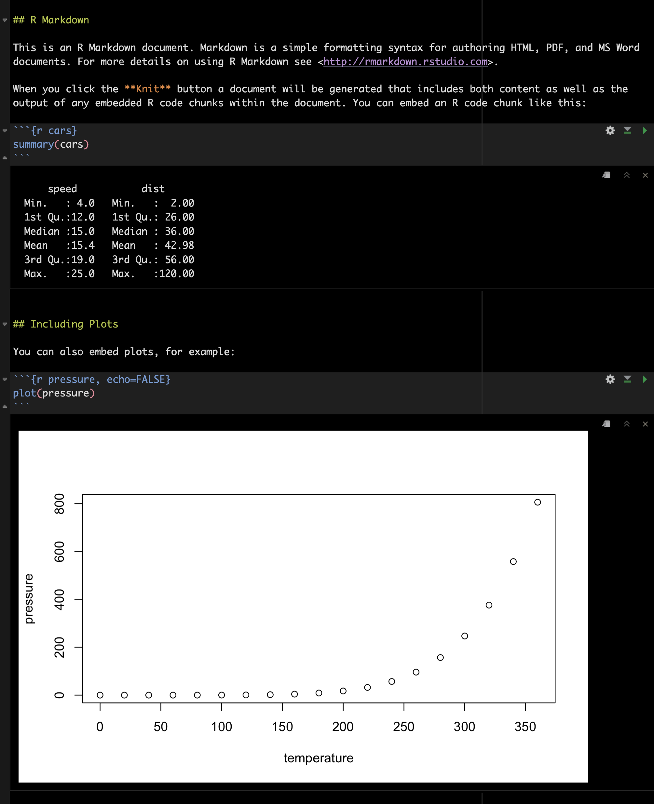
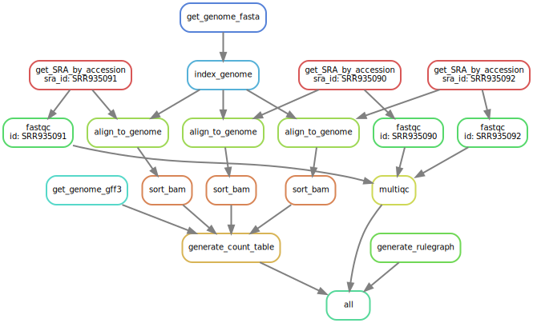

Future (stressed) you!

An example literate programming analysis
0001_xxxx ,0002_xxx, …
> sd
function (x, na.rm = FALSE)
sqrt(var(if (is.vector(x) || is.factor(x)) x else as.double(x),
na.rm = na.rm))
‘An opportunity cost’
Spotify product build - Spotify Ltd
| Point | Time to implement/learn | Prior experience | Payback |
|---|---|---|---|
| 1. Folders | < 1d | Nil | High |
| 2. Literate Computing | 1d | Nil | High |
| 3. IDE | 3d | Low (Confidence with Cmds/language) | High |
| Point | Time to implement/learn | Prior experience | Payback |
|---|---|---|---|
| 4. Workflows | 10d | Med (Confidence with a language) | Very High |
| 5. Environments | 1d | Low | Nil |
| 6. Reduce intermediate data | 3d | Med (Confidence with workflows) | Med |
| Point | Time to implement/learn | Prior experience | Payback |
|---|---|---|---|
| 7. Document | < 1d | Med (Confidence with language) | Med |
| 8. Abstraction | 100 d (functions) 300 d (objects) | High (Good ability with language) | High |